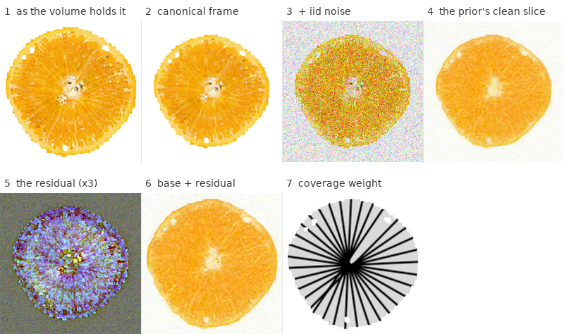
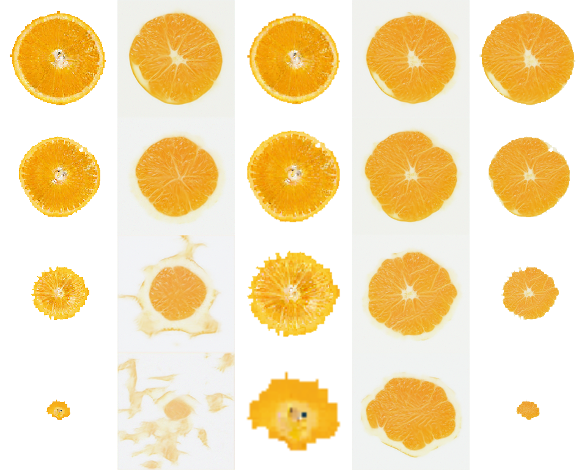
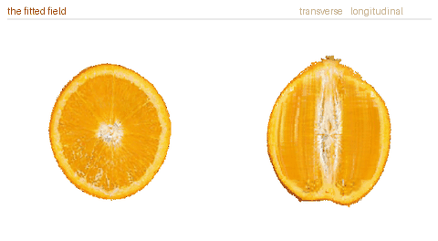
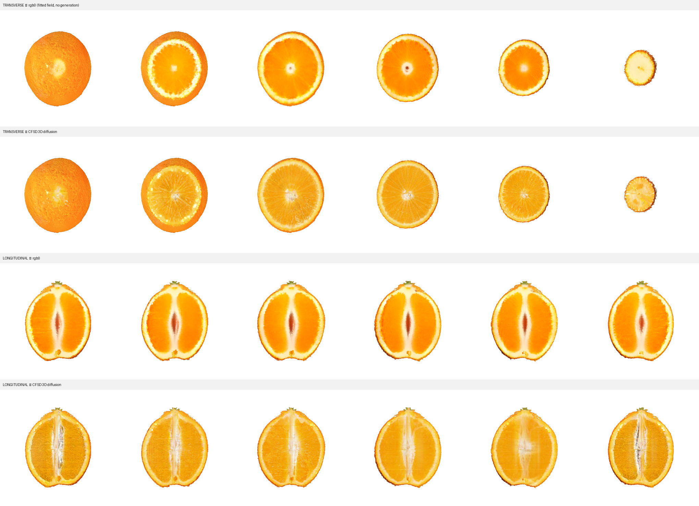

3DFusion: Lifting 2-D Diffusion Priors into an O-Voxel Interior
Two or three photographs per family cannot supervise a volume. The method: make the 3-D volume itself the state, and let a single-image cut prior propose one slice of it at a time — each slice resampled into the framing the prior was trained at, each proposal anchored back to the fitted field by measured photographic coverage. Cuts are then consistent by construction, and the asset is baked once and read at any angle with no generation at cut time.
Preprint · work in progress
Lifting one 2-D cut prior into a 3-D interior
An O-Voxel gives an object a shell and a supervised skin, but its interior is only the handful of cut planes a few photographs constrain; every other depth is unseen. The task is to fill that interior so any cut looks like a real cut of this specimen. Earlier versions of this method generated each cut face in 2-D and wrote it back into the lattice — first by overfitting one diffusion per plane, then by input-driven SDEdit from a warped reference. Both were sharp on the planes they generated, and both paid for the round trip: a face written into cells and re-read is a compromise between whatever else was written near it, and nothing in the procedure made two faces agree in three dimensions except averaging.
The method here inverts that. The state is the 3-D volume, and the 2-D prior only ever proposes an update for one slice of it. Consistency is then structural rather than enforced: there is one volume, so any two cut faces necessarily agree along the line where they meet. What makes it work is that the prior is asked its question in the only frame it can answer.

The volume is axis-aligned so that slices are the photographed family
Build a dense volume in the object’s own frame with the sweep axis set to the transverse cut normal. Then the slices perpendicular to that axis are the transverse family itself, at native resolution — no resampling stands between a slice and the thing the photographs show. Every voxel maps to a lattice cell; outside the shell is white background; the volume is initialised from the fitted field.
Only one family can be swept. Measured across all seven objects, the transverse planes are a parallel stack (normal spread \(0^\circ\)) and the longitudinal planes are a pencil through the axis (spread \(\approx 85^\circ\)). A stack tiles a volume; a pencil does not. So the volume is driven by the transverse prior alone, and each object needs one prior rather than two.
The canonical frame: asking the prior a question it can answer
The prior is a single-image diffusion with no attention and no middle block, so its receptive field is fixed in pixels and it was trained at one object size. A slice at normalised depth \(t\) is only \(\sqrt{1-t^{2}}\) as wide, so away from the equator the object shrinks in the frame and the model is out of distribution. It does not degrade gently: it returns a structureless disc, and sprawls rind-coloured material across the background.
So every slice is resampled into the framing the prior was trained at before it is queried. With the slice’s own silhouette bounding box of extent \(d\) and centre \((c_x,c_y)\), the window half-width is
$$h=\frac{d}{2\tau},\qquad \tau=0.82,$$with \(\tau\) not a tuned constant but the framing every prior’s training images are normalised to, so the inference frame is the training frame by construction. Noise is then added in that frame, where it is the iid pixel noise the model was trained on:
$$\tilde x=\sqrt{\bar\alpha_{t}}\,W(x)+\sqrt{1-\bar\alpha_{t}}\,\epsilon,\qquad \epsilon\sim\mathcal N(0,I),$$with \(W\) the canonical warp. The frame is a query frame only. Warping the model’s prediction straight back would resample the whole slice, and doing that once per axis per step blurs the volume away; instead only what the prior added travels back, and the base stays at volume resolution:
$$x \;\leftarrow\; x + W^{-1}\!\big(\hat x_0 - W(x)\big).$$
The coverage posterior
Left alone, the prior repaints everywhere, including the planes the photographs already determine. Coverage is measurable, so read it as a posterior. For each supervised plane \(p\) with unit normal \(n_p\) and offset \(d_p\), accumulate over cell centres \(x\)
$$\mathrm{cov}(x)=\sum_{p}\exp\!\Big(\!-\big(\tfrac{n_p\cdot x + d_p}{\sigma}\big)^{2}\Big),\qquad \omega(x)=1-\min\big(\mathrm{cov}(x),1\big),$$and after every outer step pull the volume back toward the fitted field \(X_0\) in proportion:
$$X \;\leftarrow\; X_0 + \omega\odot\big(X-X_0\big).$$Where the photographs cut, \(\omega\to 0\) and the data survives; where they never reached, \(\omega\to 1\) and the prior fills. This is the component that decides the sign of the whole result — the same total damping applied uniformly instead of by coverage is worth almost nothing, so it is the spatial structure doing the work, not the regularisation.

One photograph pins one plane
Each supervised photograph is affine-warped into the silhouette of the volume slice it belongs to and held there through the anneal. It is tempting, with two photographs and eight supervised planes, to cycle them — and it is wrong: the same slice then gets stretched into eight different silhouettes at eight different depths, writing content that is right in one place and wrong everywhere else. Planes without a photograph simply receive no data term; the posterior above already knows they are unconstrained. The longitudinal photographs are pinned at a lower weight, because an axis-aligned volume contains only the two azimuths of the pencil that align with its own axes, and pinning those hard writes a visible coordinate cross into every transverse face.

The result is a cuttable 3-D asset
The volume is averaged back into the lattice and that field is the asset: one colour per cell, every interior cell written, and any plane — including orientations the volume never sliced — reads its face straight out of the voxels, with no generation at cut time. Tilt the cut normal continuously from longitudinal to transverse,
$$n(\theta)=\cos\theta\,n_{\parallel}+\sin\theta\,n_{\perp},\qquad \theta:0\to\tfrac{\pi}{2},$$and the columella passes from a vertical stripe to a central dot with no discontinuity, because it was stored consistently in 3-D. One colour per cell is the price: the interior is exact for the family the volume swept and merely plausible for a strongly oblique cut — the single-value-per-cell limit any voxel interior carries — but every cut is filled and renders instantly.
A second limit is visible if you look for it, and the first number we put on it was measuring the wrong thing. Striping along the sweep axis has to be measured in the band the eye actually reads — periods of two to fifteen cells. Measured there, on the orange’s longitudinal faces: \(0.127\) for the real photographs, \(0.171\) for the FruitNinja arm, \(0.222\) for our fitted field before any generation, \(0.250\) after the lift. So we run at about twice the photographs, and roughly nine tenths of that excess is in the lattice fit already.
Two things about it are worth saying plainly. It is orange-specific: on the other five objects our stripe power sits below the photographs’, because a real cut face carries more structure at that scale than we generate. And the period is not an artefact of the supervision — it peaks at \(13\) cells against the photographs’ own \(14\), and the supervised planes are \(10\) cells apart. What we have is real segment structure over-amplified, not an invented frequency, though the lift does drag the peak from \(13\) toward \(12\), which is its own contribution. Every knob that reduces it — smoothing along the axis, widening the coverage kernel — trades against the appearance score at roughly one to one, so none is enabled. Correlating the noise along the sweep axis is enabled, because it improves the appearance score on all six objects at no cost, but it is not the repair for this.
The other open limit is the one the geometry predicts. The volume sweeps the transverse stack, and that is the family the lift improves; the longitudinal planes form a pencil through the axis, of which an axis-aligned volume contains only the two azimuths aligned with its own axes, and on that family the lift is at best neutral. Closing it is a change of representation — a volume swept in azimuth rather than in depth — not another stage bolted onto this one.

The same program on seven objects
Nothing above is orange-specific. Per object the only things that change are its own single-image diffusion (trained on that object’s cut photograph) and its reference; the pipeline, the constraints, and the render are identical. The same program fills a watermelon, an apple, a pomegranate, a loaf of bread, and a layered cake — each read from its own voxel field.
One set of settings runs all of them: the anneal schedule, the gate width, the pin weights and the canonical framing are the same numbers for every object. Where an idea needed a value chosen per object it was dropped rather than kept.
Two object-general details earn their place. Each prior’s training photographs are renormalised to the canonical framing before training, which is what turns \(\tau\) from a constant guessed on one fruit into a property of the data. And a uniform flesh exposes a moiré the busy orange texture had hidden — aliasing between the slab’s \(n_{\text{sub}}\) samples and the lattice — so the slab is rendered at \(2\times\) and averaged down.
Seven objects, one program. Each clip is a depth sweep read from that object’s voxel field; orange, watermelon and doughnut show both cut families side by side. Per object only the single-image diffusion and the reference photographs change. The doughnut’s ring topology survives the sweep, the hole staying open at every depth.